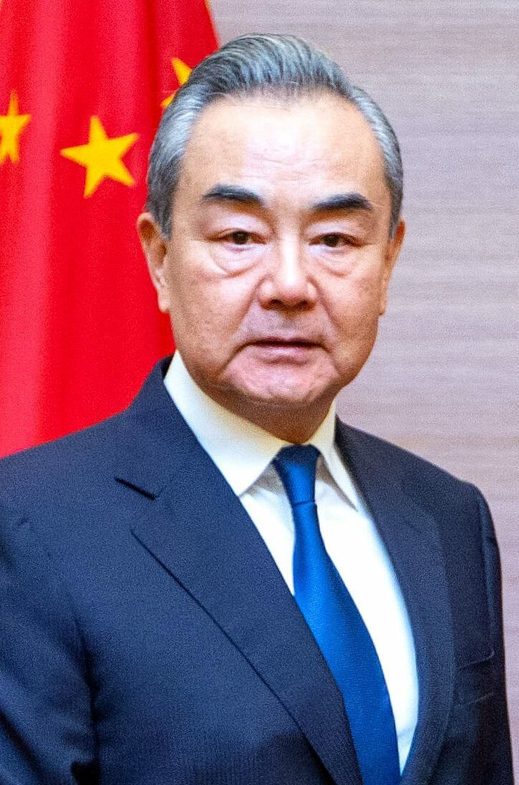

중국 외교 행보… 글로벌 거버넌스·7월 상하이 AI 회의
왕이 외교부장, 글로벌 거버넌스 개혁 방향 제시. 중국, 7월 세계 AI 회의 개최 예정.
전홍발 기자 · 2026.06.29
橋중국

중국은 최근 다자 외교 무대에서 글로벌 거버넌스 협력을 강조했다. 왕이 외교부장은 글로벌 거버넌스 개혁을 위한 주요 방향을 제시했다.
광고 문의 · 300×250또 중국은 올해 7월 상하이에서 세계 AI 회의와 글로벌 AI 거버넌스 고위급 회의를 열어 국제적 대화와 협력을 모색할 예정이다. 華橋時報는 중국의 외교·정책 발표를 사실 위주로 전한다.
출처·참고 (사실 확인용 — 본문은 직접 재작성)
· 中國 외교부 (fmprc.gov.cn)
· gov.cn (english.www.gov.cn)
· 中國 외교부 (fmprc.gov.cn)
· gov.cn (english.www.gov.cn)